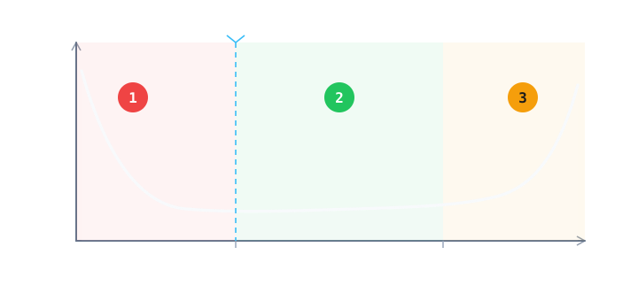

Part 5 · 后段：测试与封装
最终测试与可靠性：确保芯片能用很多年
封装完还要再测一遍，因为封装本身会引入新的失效。出厂前还要「烤」一遍，把体质不好的先烤坏在工厂里。这一章讲的是：怎么用几周的时间，推断一颗芯片能活十年。
浴缸曲线可交互
老化筛选演示
01失效率的三个阶段
把一大批芯片的失效率按时间画出来，两端高、中间低，像浴缸。左边是「先天不足」，中间是「稳定工作」，右边是「老化」。

02点一段，看它为什么坏
三段的责任人不一样：左边多半是制造缺陷，中间是随机事件，右边是材料与设计寿命。点一下任意一段。
早期失效期：制造过程留下的缺陷（微粒、氧化层弱点、封装应力）在最初使用时就暴露。这一段是「先天不足」，不是设计问题。
老化筛选（Burn-in）在做什么：让芯片在高温、较高电压下跑一段时间，把这段曲线「提前烧完」。客户拿到的芯片，从稳定期开始用。代价是时间和成本，而且它只筛掉早期失效，不会让芯片更耐用。
03怎么在几周内证明能用十年
不可能真的等十年。做法是加速：用更高的温度、电压、湿度让失效更快发生，再用模型外推正常条件下的寿命。
| 测试 | 做法 | 模拟什么 |
|---|---|---|
| 高温工作寿命 HTOL | 高温下持续通电运行上千小时 | 长期使用造成的老化 |
| 温度循环 | 反复在高温与低温之间切换 | 开关机与环境变化的热胀冷缩 |
| 高加速应力 HAST | 高温、高湿、加压 | 湿气入侵封装 |
| 静电放电 ESD | 施加模拟的静电放电 | 人体或机器接触时的静电 |
条件多依照 JEDEC 等标准；车用另有更严格的标准（如 AEC-Q100），目标是「零缺陷」。
04芯片是怎么老化的
老化不是「用旧了」，而是几个具体的物理机制在慢慢改变材料。它们都能对应回前面某一章的工艺。
电迁移 EM
电流长期推动金属原子，导线形成空洞而断线。对应第 10 章金属化
时间相关介质击穿 TDDB
绝缘层长期承受电场，最后被击穿。对应第 12 章栅极绝缘层
热载流子注入 HCI
高能电子撞进栅极绝缘层，晶体管特性慢慢改变。对应第 2 章器件
偏置温度不稳定性 BTI
高温加电压，让阈值电压 Vt 随时间漂移。对应第 17 章工艺控制
可靠性是统计问题：没法预测「这一颗」哪天坏，但可以用大量样本推算一群芯片的失效概率，单位是 FIT——每十亿器件小时失效几次。这是和客户对话的共同语言。
本章重点
- 封装后还要最终测试，因为封装会引入新的失效。
- 失效率随时间呈浴缸曲线：早期失效、稳定期、老化期。
- 老化筛选把早期失效提前到工厂里发生，但不能提升芯片寿命。
- 可靠性靠加速测试加模型外推，不是真的等十年。
- 老化有具体机制：EM、TDDB、HCI、BTI，每一个都对应前面的工艺章节。